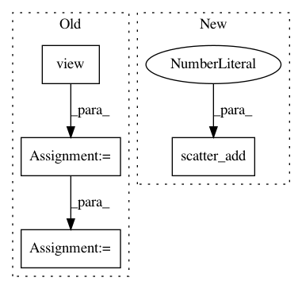

3b66ade462ac29a13daf707dc08222da7d303e69,torch_geometric/nn/glob/set2set.py,Set2Set,forward,#Set2Set#Any#Any#,47
Before Change
q = q.view(batch_size, 1, self.in_channels)
e = (x * q).sum(dim=-1) // Dot product.
a = torch.softmax(e, dim=-1)
a = a.view(batch_size, max_nodes, 1)
r = (a * x).sum(dim=1, keepdim=True)
q_star = torch.cat([q, r], dim=-1)
q_star = q_star.view(1, batch_size, self.out_channels)
q_star = q_star.view(batch_size, self.out_channels)
return q_star
def __repr__(self):
return "{}({}, {})".format(self.__class__.__name__, self.in_channels,
After Change
q = q.view(batch_size, self.in_channels)
e = (x * q[batch]).sum(dim=-1, keepdim=True)
a = softmax(e, batch, num_nodes=batch_size)
r = scatter_add(a * x, batch, dim=0, dim_size=batch_size)
q_star = torch.cat([q, r], dim=-1)
return q_star
In pattern: SUPERPATTERN
Frequency: 3
Non-data size: 4
Instances
Project Name: rusty1s/pytorch_geometric
Commit Name: 3b66ade462ac29a13daf707dc08222da7d303e69
Time: 2018-12-15
Author: matthias.fey@tu-dortmund.de
File Name: torch_geometric/nn/glob/set2set.py
Class Name: Set2Set
Method Name: forward
Project Name: rusty1s/pytorch_geometric
Commit Name: 94ecd2ae789c038e2e8ed9ed8e83f9adfe3eb447
Time: 2018-05-02
Author: matthias.fey@tu-dortmund.de
File Name: torch_geometric/utils/softmax.py
Class Name:
Method Name: softmax
Project Name: rusty1s/pytorch_geometric
Commit Name: 62a05d5e2611f6ec8fda2c7d7c5b57cf8b64402b
Time: 2018-01-12
Author: matthias.fey@tu-dortmund.de
File Name: torch_geometric/nn/functional/pool/pool.py
Class Name:
Method Name: max_pool